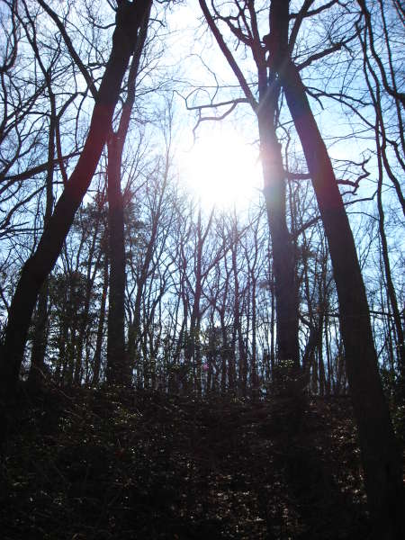
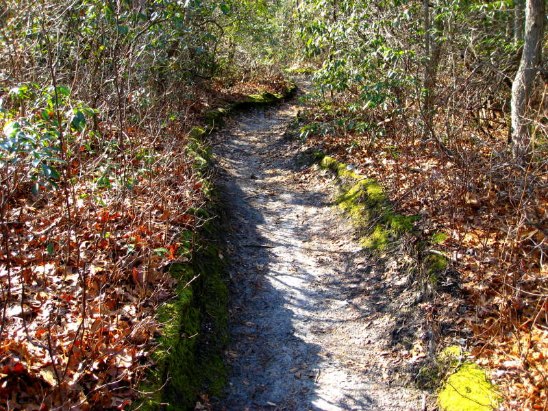
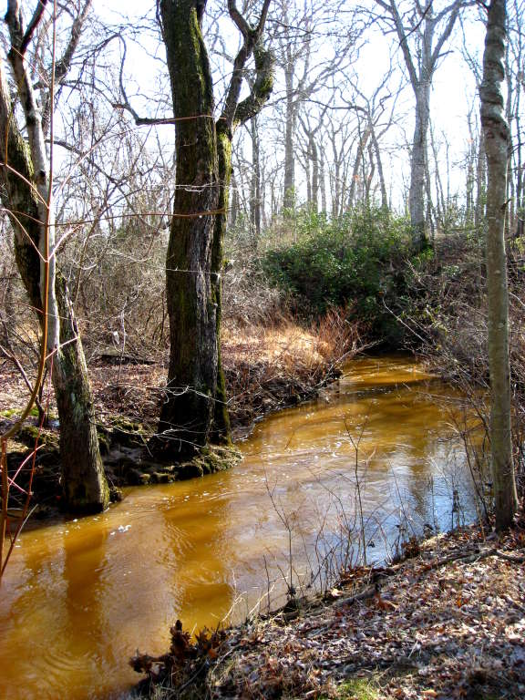
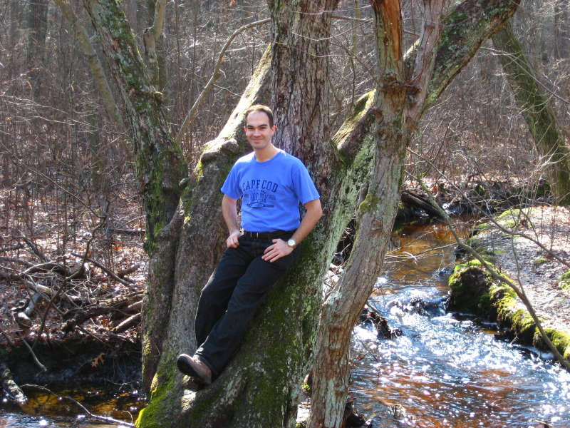
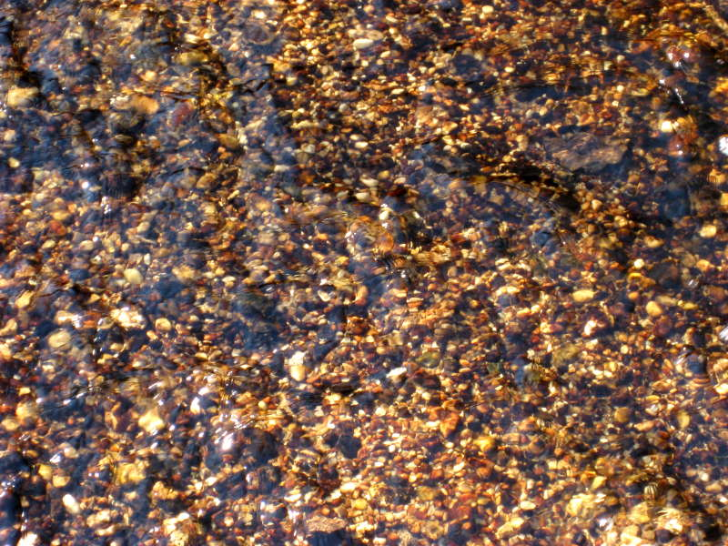
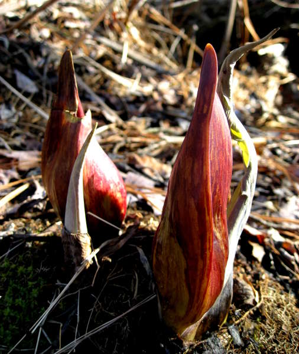

Shark River Park
I arrived at Shark River Park on a sunny day.

Thick moss lined the winding paths through the woods.

Muddy, subtly rippled streams snaked by, probably free of sharks.

It was early February, but plenty warm enough for me to chill out on this tree enjoying the scenery.

Some of the water was perfectly clear, and you can see the pebbles below.

Only so much to see in this park, but we passed this funky lifeform on the way out.
Back